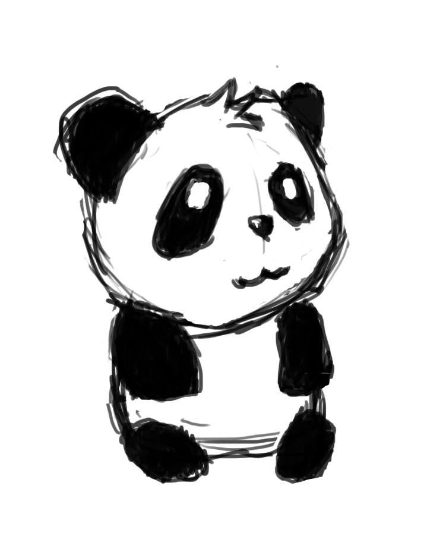
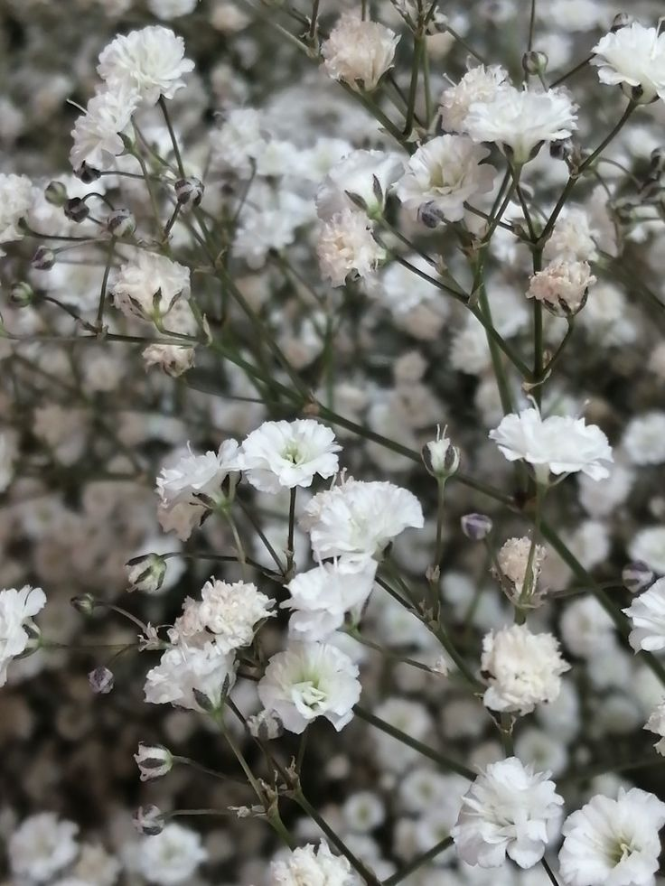

Bueno...gracias. Gracias por existir, por vivir, por ser, por estar y por...Yu. Gracias por todas las noches que estaba mal o cansado o deprimido y pude entrar a tus streams. Gracias porque nos diste un espacio seguro y me permitiste ser como soy sin que me juzguen. Gracias por tantas risas, tantas reflexiones, buenos momentos, recuerdos, frases que se han quedado conmigo a traves del tiempo. Gracias por incluir a tanta gente de la que me termine volviendo amigo. Gracias por darme un lugar donde estar y donde soy bienvenido. Gracias por esta comunidad increible que es la tuya y porque de todos los momentos del mundo pude coincidir con uno en el que te conoci. Eres una persona increible, admirable, fuerte, valiente, facil de hablar, facil de querer, buena oyente, buena conversadora y por sobre todo...una buena persona. A veces las palabras me sobran, otras veces no me bastan y otras veces solo me quedo sin palabras cuando intento hacer que entienda. Quizas el lenguaje no esta hecho para expresar eso, despues de todo "el corazon tiene razones que la razon no entiende". A veces me preocupa no poder ayudarte, no poder estar ahi para ti si me necesitas aunque sea oyendote lo que te pasa o dando un buen consejo. Me preocupa que quizas te descuides, no comas bien, no duermas bien, te hables mal a ti misma y olvides quien eres. No conozco tu alma completamente como para decirte quien TU eres, pero si puedo decirte que todas esas cosas malas que la mente dice o que las personas con veneno en su corazon proclaman de ti...no es verdad. Tu sabes quien eres y tu sabes todo lo que has hecho, logrado y superado por tu cuenta sin la ayuda de alguien mas o sin volverte a la maldad que este mundo te grita que compartas. Tu eres mi favorita, aunque me encanta decir que no, eres una persona que admiro mucho y que puedo llegar a entender con varias cosas. Pero, sobre todas las cosas, tu eres...mi numero uno ;]
Puedes volver aqui cuando quieras, y todas las veces que quieras, despues de todo, una persona maravillosa me dijo una vez: "Tu no te preocupes, sabes que yo estare aqui esperando que regreses"

y tambien recuerde: "¿Quien dijo que eso era todo lo que podias demostrar?"